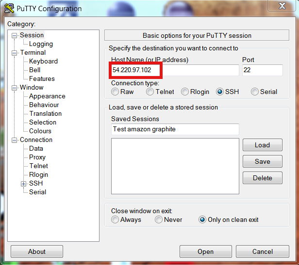
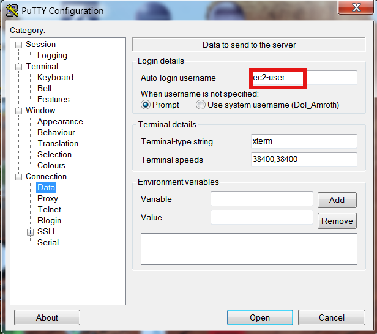
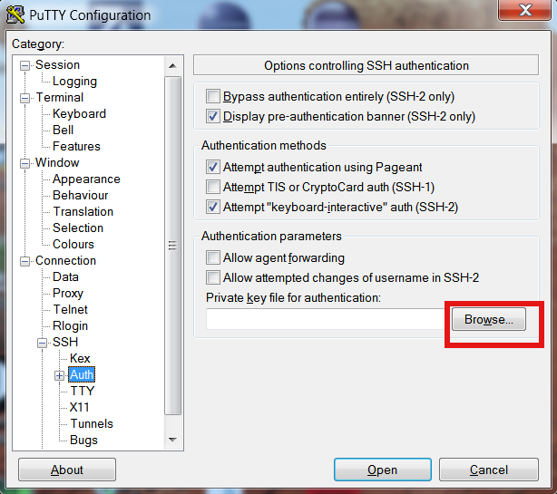
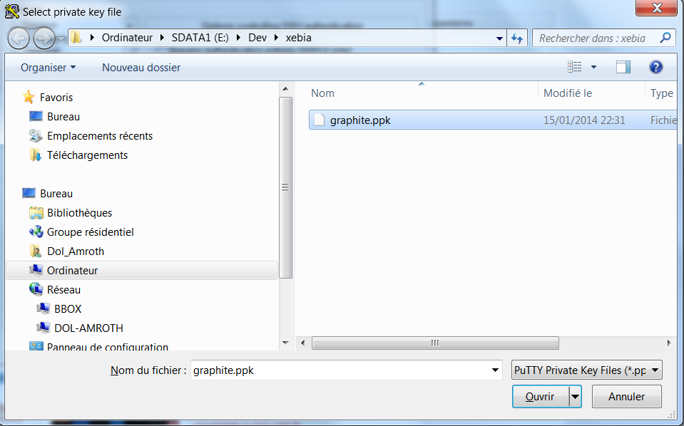
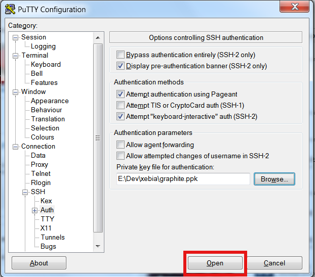

L'application Cocktail :
Ouvrez votre web app Graphite. C'est dans cette interface que vous pourrez admirer les magnifiques graphes que vous allez bientôt commencer à alimenter.
Pour vous connecter aux machines, récupérer le fichier graphite.pem ou le fichier graphite.ppk pour les utilisateurs Windows, dans votre répertoire courant (la clef sera révoquée après le workshop). N'oubliez pas de changer les permissions sur le fichier :
Connectez-vous en SSH à l'adresse de votre Tomcat
Pour windows :
- Si vous ne l'avez pas, récupérez PuTTY
- Entrez l'adresse {{page.group}}-tomcat-monitoring.aws.xebiatechevent.info à l'emplacement de l'encadré rouge ci-dessous

- Suivez ensuite les screenshots suivants :




Pour Linux ou Mac :
{% highlight bash %}
$ chmod 600 graphite.pem
{% endhighlight %}
{% highlight bash %}
$ ssh -i graphite.pem ec2-user@{{page.group}}-cocktail-monitoring.aws.xebiatechevent.info
{% endhighlight %}
Utilisation de l'application Cocktail :
Récupérer l'application Cocktail
{% highlight bash %}
$ git clone https://github.com/antoinemichaud/embedded-jmxtrans-samples.git
{% endhighlight %}
Placez-vous dans le répertoire embedded-jmxtrans-samples :
{% highlight bash %}
$ cd embedded-jmxtrans-samples
{% endhighlight %}
Packagez et démarrez l'application :
{% highlight bash %}
$ mvn clean package jetty:run
{% endhighlight %}
Une fois l'application terminée de démarrer, rendez-vous sur le port 8080 de votre toute nouvelle application : cocktail
Et pour nous récompenser de cette dure labeur achetons-nous 1 sex on the beach.
Configuration de JMXTrans
Actuellement, il n'existe pas de moyen simple d'observer les données système, de la JVM, ainsi que le comportement de l'utilisateur sur l'application.
Pour envoyer des données à Graphite, nous allons envoyer des données grâce à JMXTrans.
Pour nous éviter l'installation d'un serveur JMXTrans, nous allons utiliser JMXTrans Embedded.
- Inclure le plugin maven de JMXTrans dans les sources de l'application Cocktail (utiliser VIM pour éditer le POM par exemple);
{% highlight xml %}
org.jmxtrans.embedded
embedded-jmxtrans
1.0.9-SNAPSHOT
{% endhighlight %}
Une fois la dépendance résolue, il faut configurer notre serveur JMXTrans embedded. JMXTrans embedded utilise un fichier JSON pour sa configuration.
- Dans le répertoire src/main/resources, éditer le fichier jmxtrans.json
{% highlight bash %}
$ vi src/main/resources/jmxtrans.json
{% endhighlight %}
- Pour commencer, on va faire pointer notre jmxtrans vers le serveur graphite et logger les données que nous envoyons à graphite avec SLF4J.
{% highlight json %}
{
"outputWriters": [
{
"@class": "org.jmxtrans.embedded.output.Slf4jWriter",
"settings": {
"enabled": "${jmxtrans.writer.slf4j.enabled:true}"
}
},
{
"@class": "org.jmxtrans.embedded.output.GraphiteWriter",
"settings": {
"host": "{{page.group}}-graphite-monitoring.aws.xebiatechevent.info",
"port": "2003",
"enabled": "true",
"namePrefix": "stats"
}
}
]
}
{% endhighlight %}
C'est Spring MVC qui va se charger d'aller chercher le fichier de configuration de jmxtrans
- Ouvrir le fichier src/main/webapp/WEB-INF/spring-mvc-servlet.xml
- Ajouter/modifier les lignes suivantes :
{% highlight xml %}
classpath:jmxtrans.json
classpath:org/jmxtrans/embedded/config/tomcat-7.json
classpath:org/jmxtrans/embedded/config/jmxtrans-internals.json
classpath:org/jmxtrans/embedded/config/jvm-sun-hotspot.json
...
{% endhighlight %}
- La première ligne concerne la configuration jmxtrans.json que nous venons d'écrire. Elle définit les canaux de sortie de jmxtrans et permettra plus loin dans cet atelier de définir les métriques métier.
- Les trois dernières lignes permettent de définir les métriques du système et de la JVM.
Redémarrer Jetty pour prendre en compte les modifications
{% highlight bash %}
$ mvn clean package jetty:run
{% endhighlight %}
Visualisation des données système sur Graphite
- Rendez-vous sur Graphite
- Dans la colonne de gauche, sélectionner
Graphite > stats > jvm
- Vous avez maintenant accès à plusieurs métriques de la JVM avec lesquelles vous pouvez commencer à jouer
Ajout d'une métrique métier
Afin de pouvoir prévoir de nouvelles évolutions de notre application, nous allons transmettre à Graphite des données métier.
JMXTrans a l'avantage de permettre la configuration des données à transmettre avec de simples annotations JMX.
Mettre en place un compteur de type "GAUGE" qui donne le nombre de fois que la page d'accueil a été affichée.
- Créer un compteur
displayedHomeCount
- Ouvrir le fichier
vi src/main/java/org/jmxtrans/embedded/samples/cocktail/cocktail/CocktailController.java
- Ajouter une variable privée
{% highlight ruby %}private final AtomicInteger displayedHomeCount = new AtomicInteger();{% endhighlight %}
- Incrémenter le compteur à chaque appel de la page d'accueil
- Editer la méthode
home()
Ajouter la ligne {% highlight ruby %}displayedHomeCount.incrementAndGet();{% endhighlight %}
- Exposer la métrique en créant une nouvelle méthode
{% highlight ruby %}@ManagedMetric(metricType = MetricType.GAUGE)
public int getDisplayedHomeCount() {
return displayedHomeCount.get();
}{% endhighlight %}
-
Exposer le contrôleur avec l'annotation
{% highlight ruby %}@ManagedResource("cocktail:type=CocktailController,name=CocktailController")
@Controller
public class CocktailController {
...
{% endhighlight %}
-
Ouvrir le fichier jmxtrans.json pour envoyer la nouvelle métrique vers Graphite
{% highlight bash %}
$ vi src/main/resources/jmxtrans.json
{% endhighlight %}
-
Ajouter la nouvelle métrique
{% highlight json %}
"queries": [
{
"objectName": "cocktail:type=CocktailController,name=CocktailController",
"resultAlias": "cocktail",
"attributes": [
"DisplayedHomeCount"
]
}
],
...
{% endhighlight %}
Redémarrer Jetty pour prendre en compte les modifications
{% highlight bash %}
$ mvn clean package jetty:run
{% endhighlight %}
Visualisation des données système sur Graphite
- Rendez-vous sur Graphite
- Dans la colonne de gauche, sélectionner
Graphite > stats > cocktail > DisplayedHomeCount
- Vous avez maintenant accès au graphe représentant le nombre d'affichage de la page Home
Récupérer la totalité des métriques
{% highlight bash %}
$ git stash ; git checkout -b solution origin/solution
{% endhighlight %}
Valoriser correctement l'URL de Graphite
- Ouvrir le fichier
jmxtrans.json
{% highlight bash %}
$ vi src/main/resources/jmxtrans.json
{% endhighlight %}
- Remplacer la ligne
{% highlight ruby %}
"host": "io-graphite-monitoring.aws.xebiatechevent.info",
{% endhighlight %}
- Par
{% highlight ruby %}
"host": "{{page.group}}-graphite-monitoring.aws.xebiatechevent.info",
{% endhighlight %}
Redémarrer Jetty pour prendre en compte les modifications
{% highlight bash %}
$ mvn clean package jetty:run
{% endhighlight %}
Afin de simuler des achats de cocktail, un script a été crée. Pour le lancer, ouvrez un second terminal vers la console, et lancez la commande suivante :
{% highlight bash %}
$ launch-gatling
{% endhighlight %}